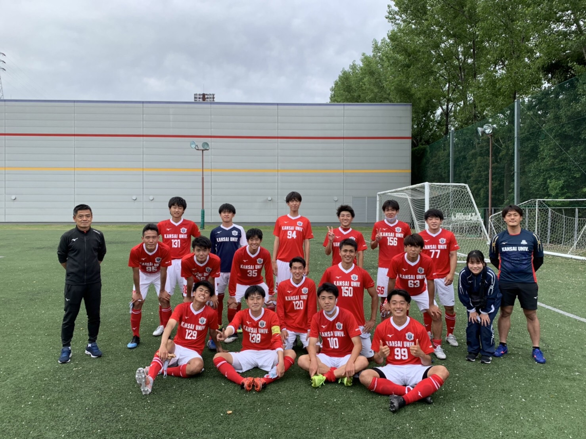

Profile

関西大学体育会サッカー部で選手＆広報活動をしています。
大学2年次から関西大学体育会サッカー部のHPを運営。
3年次にはHPリニューアルを手がけました。
この経験がきっかけで、プログラミングを勉強し始めました。
体育会で培った、やり抜く力が武器です。どんな案件でも粘り強くやり抜くことを誓います。
目指すエンジニア像
～人間力のあるエンジニア～
プログラミングは正しいコードを書けば動きます。
でも、人間は正しさだけでは動かない。
だから、コンピューターとも人ともコミュニケーションをとれる人になりたい。

武器
短納期
現在、大学4年ということで、部活の時間以外は稼働することができます。 週に40時間程の時間は確保できるため、短い期間で納品することができます。
即レス
クライアント様との信頼関係を大切にしたいと考えているため、即レスを心掛けています。
やり抜く力
やると決めたことは必ずやり抜く人間です。 契約をさせていただくことになれば、必ず最後までやり抜きます。